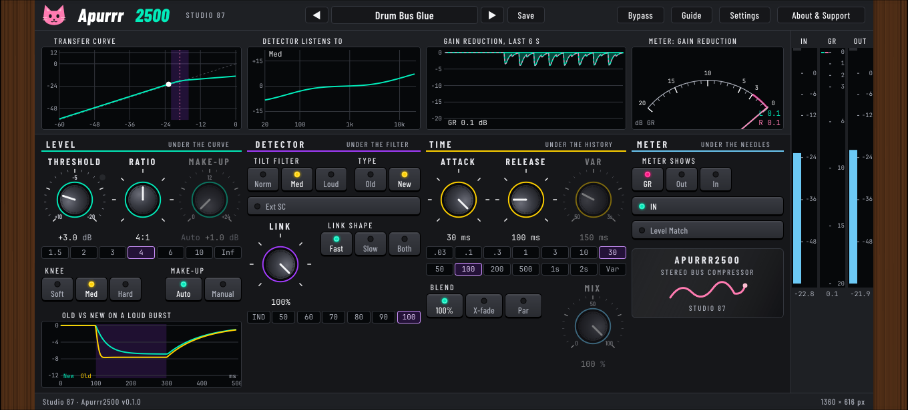

Apurrr2500
A free, open source, cat-themed stereo bus compressor (VST3 for Linux, Windows and macOS), made for gluing a mix together.

Download
Releases: version 0.1.0 is a test build. One zip with installers, PDF manual and checksums. Installers are unsigned, so your system may warn once; see the README.
Manual
Open the manual (the PDF is in the release zip).
Design mockup
The interactive mockup the plugin was built from.
Source
github.com/SpeakingColors/apurrr2500. AGPL-3.0-or-later. Collects nothing.